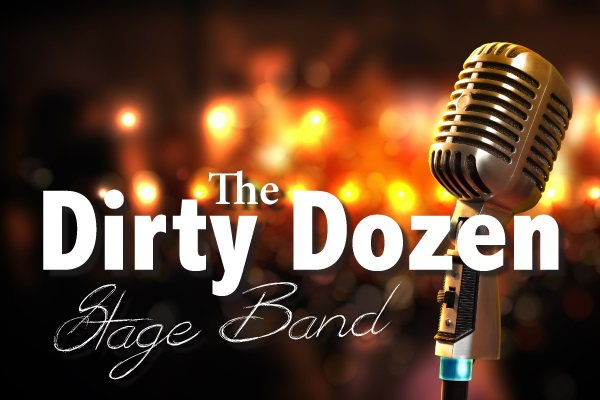

Notices
Posted 24-Mar-15
Posted 21-March-15
Posted 17-Mar-15

Townsville's dynamic 12-piece Stage Band!
Jazz, rock, blues and modern top-40 songs featuring vocalists, trumpets, saxophones, trombone, drums, piano/keyboard and guitars.
Some titles from the repertoire:
- It Don't Mean a Thing
- Mustang Sally
- Spinning Wheel
- Moondance
- In the Midnight Hour
- Le Belleclaire Blues
- Lady Madonna
- Skyfall
- Shake a Tail Feather
- Soul Man
- Peter Gunn
- Minnie the Moocha
- Sweet Home Chicago
- R.E.S.P.E.C.T.
- Everybody
- Leave Your Hat On
- Superstition
- The Letter
- Proud Mary
- Knock on Wood
- I Got You
- ROCK in the USA
- December 1963 (Oh What a Night!)
- Don't Know Why
- Walkin' on Sunshine
Contact Andi Hodgson 0421 072 625